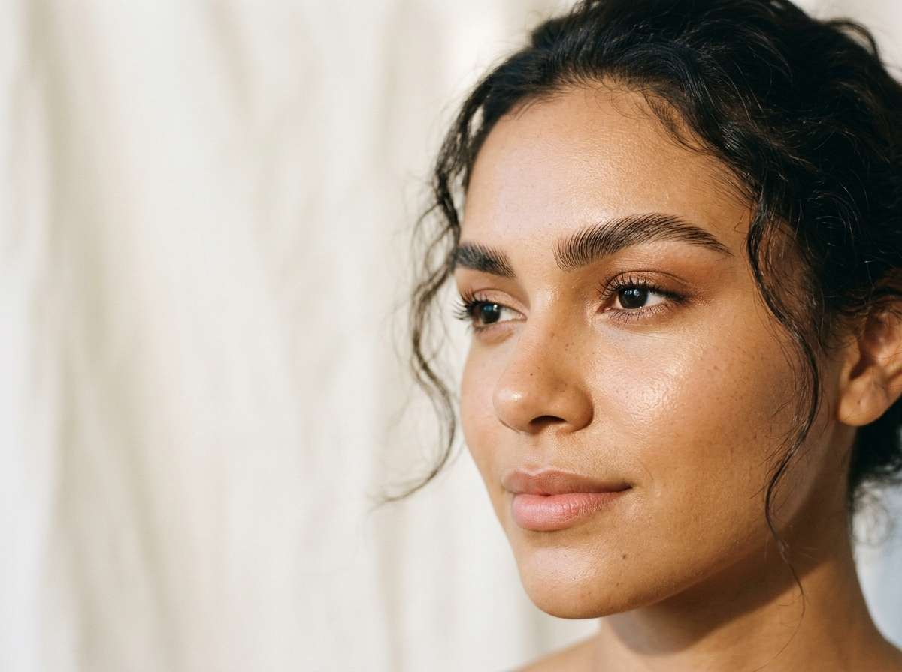
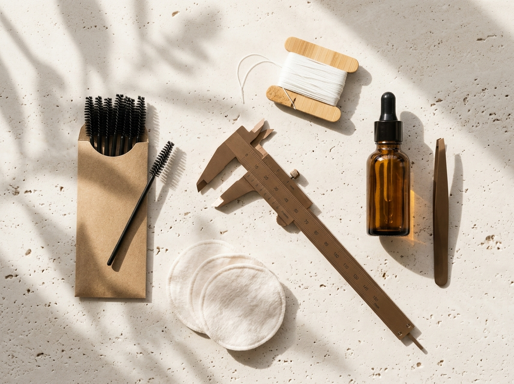
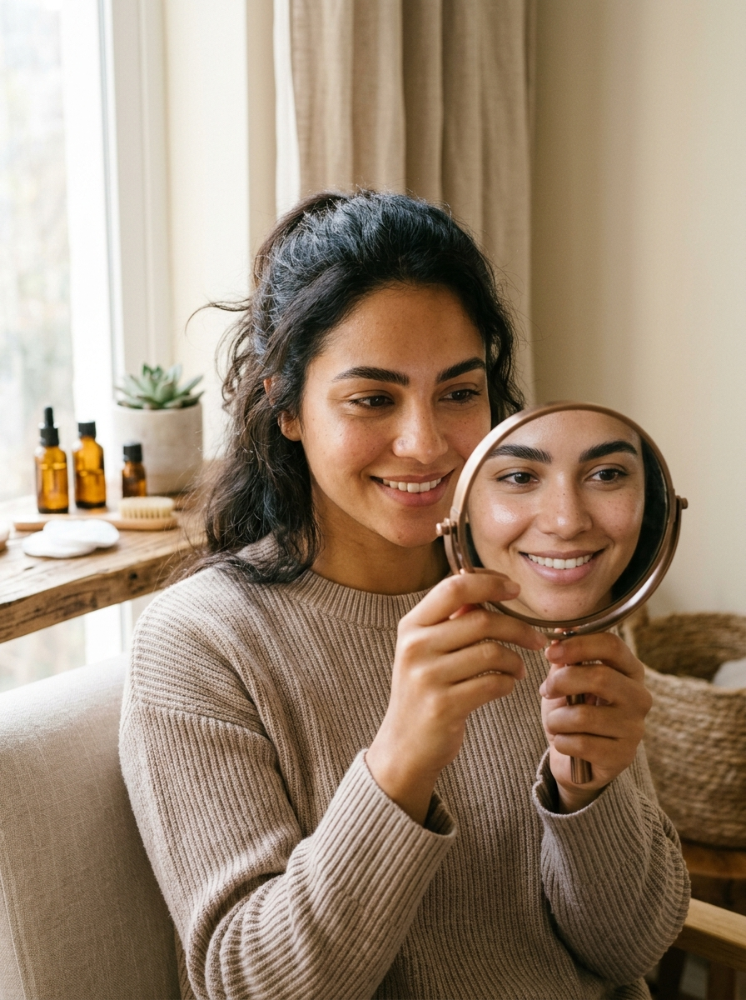

Diagnóstico & Mapeamento Geométrico
Com auxílio do paquímetro e linha de marcação suave, medimos ponto inicial, arco e cauda guiados pela estrutura óssea dos seus olhos e nariz. Você visualiza e aprova o desenho antes de retirar qualquer fio.
Design personalizado com mapeamento geométrico facial, respeito absoluto à espessura natural dos seus fios e atendimento cuidadoso no conforto do seu espaço.

Estou selecionando 6 mulheres para atualizar o portfólio fotográfico de olhares reais. Você recebe o procedimento completo de mapeamento facial e design personalizado pagando apenas a ajuda de custo operacional.
Transparência total: a mão de obra do design é cortesia para portfólio. Os R$ 30 cobrem unicamente o custo de deslocamento e o kit individual de materiais descartáveis.
Preencha abaixo para gerar sua mensagem pronta e confirmar horário direto no WhatsApp.
Sobrancelhas bem feitas não parecem artificiais — elas descansam e iluminam o rosto. Conheça as três etapas de todo atendimento.


Com auxílio do paquímetro e linha de marcação suave, medimos ponto inicial, arco e cauda guiados pela estrutura óssea dos seus olhos e nariz. Você visualiza e aprova o desenho antes de retirar qualquer fio.
Remoção delicada apenas dos pelos fora do projeto, preservando a densidade natural e recuperando possíveis falhas ao longo do ciclo de crescimento.
Escovinhas, algodões e materiais de uso único abertos na sua frente, seguidos de hidratação calmante para deixar a pele macia e sem vermelhidão excessiva.
Clique em qualquer cor abaixo para copiar o código HEX oficial do Branding Kit da marca.
Porque o serviço técnico de design entra como cortesia para produção de fotos reais de portfólio. Os R$ 30 servem unicamente para cobrir o deslocamento até você e os materiais descartáveis individuais utilizados no atendimento.
O ideal é estar pelo menos 15 a 20 dias sem limpar as sobrancelhas para que o mapeamento geométrico consiga evidenciar bem o antes e depois, mantendo os fios cheios e alinhados.
De jeito nenhum. A proposta é justamente valorizar a espessura natural e a harmonia do seu rosto. Todo o desenho é marcado antes e mostrado no espelho para sua aprovação antes de iniciar.
Registramos fotos e vídeos curtos em luz natural do antes e depois do olhar (com foco na região das sobrancelhas), sempre com total respeito e delicadeza.